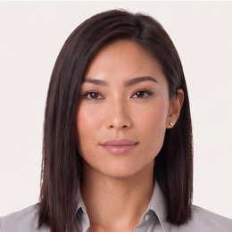
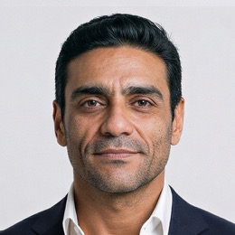
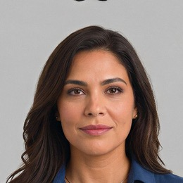
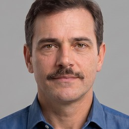
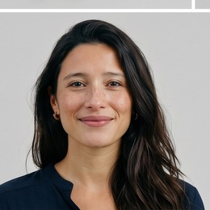
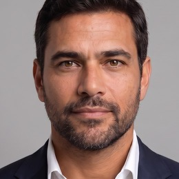
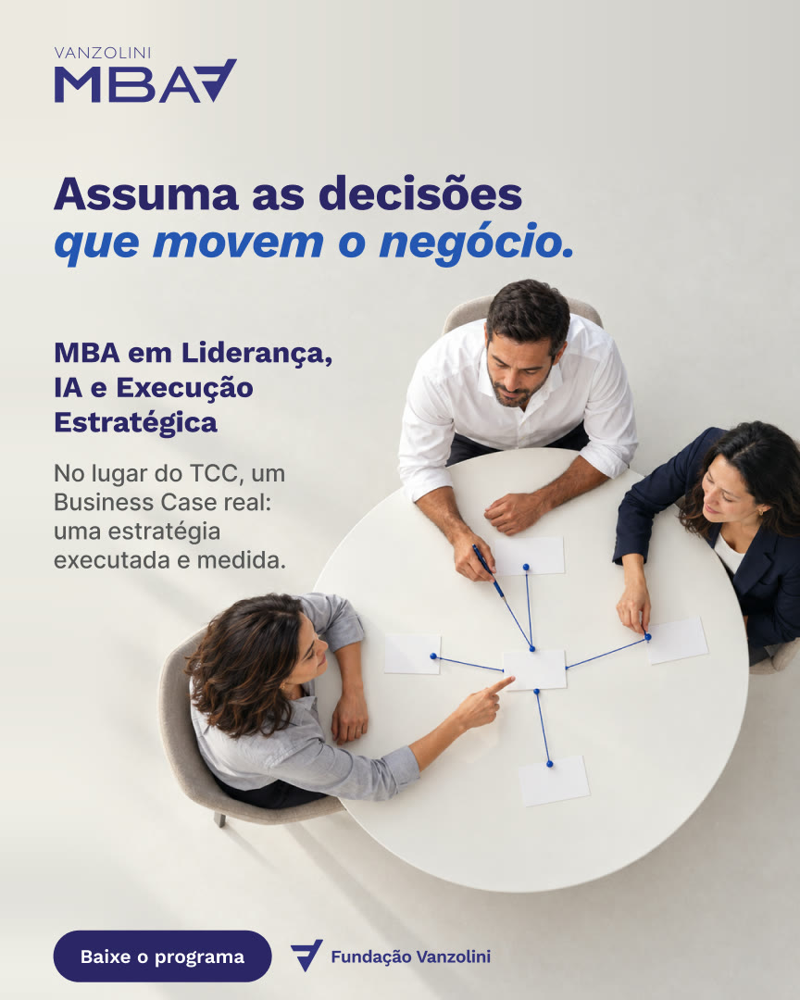
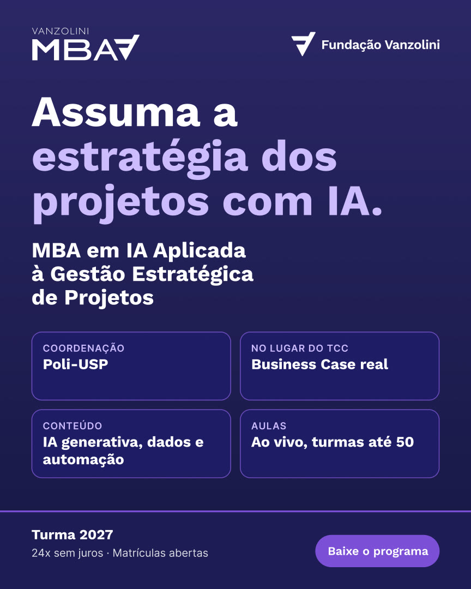
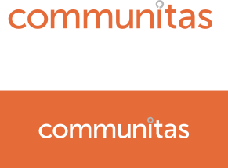

Turmas 2027 · outubro de 2026
Uma campanha só para os três MBAs, falando da carreira de quem se matricula.
Quatro layouts que se revezam no feed e em cada etapa do funil.
Rastreio, LPs e réguas prontos para a verba de 2027 render mais.
de ganho salarial com MBA em cargos de coordenação. Em analista, +15%.
de salário medido nos egressos de MBA da FGV.
é o critério mais considerado na escolha do MBA.
acham que dominar IA será essencial para a próxima promoção.
Chegam com experiência, certificação e, às vezes, outro MBA. Estão trocando de cadeira: promoção, nova área ou recolocação.

Eng. da Qualidadejá tinham certificação de qualidade: ISO, Green Belt, IATF.

IA Aplicada a Projetosjá em gerência ou acima, quase todos com PMP, Scrum ou Black Belt.

Liderança, IA e Execuçãode analista a gerente, querendo assento na decisão.
aspiração e estilo de vida
certificado USP e funil com isca
linhagem Poli e urgência
combo de certificações
desconto no título
preço e bolsa
Nenhum dos 55 anúncios analisados fala de promoção ou de assumir mais responsabilidade.
nos anúncios do mercado
na campanha Vanzolini
de custo por lead no anúncio do EQ com uma frase só.
mais cliques no vídeo do que nas peças estáticas.
de conversão na LP do LIEE, quase o dobro das outras.
a média do setor no clique do primeiro e-mail da régua.
Sair da lista de itens e falar uma coisa só, grande.
Hoje recebe 5% da verba e entrega o dobro de cliques.
Desconto e parcela no fundo do funil, não no topo.
Menos envios para a base fria, mais contato com quem clicou.
ID no link
origem no RD
origem no CRM
por anúncio
das matrículas com origem identificada.
Depende do projeto de tagueamento, que corre em paralelo à campanha.
Com botão fixo no celular.
O bloco de oferta do LIEE, que converte 9,9%, vai para os três.
Ex-alunos e Business Case no lugar de depoimentos de cursos curtos.
Uma fonte única para turma e oferta em todas as páginas.
Assuma.
Assuma a liderança da qualidade.
Assuma a estratégia dos projetos com IA.
Assuma as decisões que movem o negócio.
No lugar do TCC, um Business Case real.
O aluno da Vanzolini é técnico, certificado e tem anos de casa. Quer crescer onde já está. O “Assuma” fala com quem já tem a competência e quer o lugar.
Força na experiência. Sempre à frente, inovando.
já lideram equipes: supervisão, coordenação, gerência ou diretoria.
têm mais de dez anos de carreira.
trocaram de cadeira em 2025 e 2026 ou estão se recolocando.
já tinham outro MBA e voltaram para somar IA e gestão.
Coordenadora de Qualidade · Opuspac
De analista a líder e a coordenadora durante o MBA, em 18 meses.
Supervisor de Qualidade · Puratos
Oito anos na empresa, Green Belt, mirando a coordenação.
Gerente Sênior de Suprimentos · Elera Renováveis
Trocou de empresa em outubro de 2026, subindo para gerente sênior.
Ex-gerente de P&D · AGRANA Fruit
Matriculou-se um mês depois de deixar a gerência, para o próximo passo.

Engenharia da Qualidade
Especialista técnico que quer passar de quem fiscaliza a quem decide.
Assuma a liderança da qualidade.

IA Aplicada a Projetos
Gerente de projetos que quer comandar o portfólio, com a IA a favor.
Assuma a estratégia dos projetos com IA.

Liderança, IA e Execução
Analista sênior a gerente que quer assento na mesa de decisão.
Assuma as decisões que movem o negócio.
Nascida na Engenharia de Produção da Poli-USP, com coordenação Poli-USP.
do Brasil a certificar sistema de gestão da qualidade.
real, no lugar do TCC, feito sobre a empresa do aluno.
dentro dos três MBAs, com professores de mercado e turmas de até 50.
usamos
assumacarreiraliderançadecisãoBusiness CaseaplicadomedidoCoordenação Poli-USPTurma 2027deixamos de fora
diplomacertificado USPpromessa de saláriovocê está ficando para trásdominetransformedesconto no títuloOs quatro layouts rodam juntos, com a mesma frase, a mesma marca e o mesmo personagem.
Arte nova no feed a cada duas a quatro semanas, sem cansar quem já viu.
As escolas repetem um molde só. Variar mantém a Vanzolini reconhecível e diferente.
Cada layout tem um papel: chamar atenção, mostrar o ganho ou converter.
O V da Fundação Vanzolini, grande e cortado, atrás do personagem. Lembra a marca em cada peça.
A palavra do curso ocupa o quadro e o personagem aparece de perto. Feito para parar a rolagem.
Luz natural e o personagem interagindo com o ganho: a escada, a peça que fecha o projeto, a mesa de decisão.

O curso como herói, com três itens concretos e a oferta. O formato que mais converteu em 2026.
Os diferenciais em quatro caixas: coordenação, Business Case, formato e professores. Leitura rápida para quem já está decidindo.

Título em destaque, Personagem e V, Reels.
Fundo claro, carrossel e conteúdo para baixar.
Chamadas com turma, parcela e prazo.
De três a cinco artes por curso no ar, trocando a cada duas a quatro semanas.
As peças em movimento já estão prontas. Os demais formatos seguem o mesmo padrão na sequência.
Reels · Personagem e V
Reels · Chamadas
Verde · Yumi e Otávio
Roxo · Paulo e Denise
Azul · Beatriz e Gustavo
Navy e branco na estrutura
Work Sans e Inter, peso máximo 700
Personagem em cena, nunca retrato
entrada, para todos
Três e-mails de trilha e contato comercial no mesmo dia
Objeção e prova: turma, grade e quem já cursou
Um reenvio com assunto novo e pausa
Fecho para quem abriu ou clicou
e-mails na régua
da base chegando ao fechamento
buscas por mês para “mba gestão de projetos”. Espaço para o IAGE crescer no orgânico.
buscas para “mba gestão estratégica”, com baixa concorrência. Porta de entrada do LIEE.
Material para baixar, com o diferencial do curso como isca para o LIEE.
Chamada do MBA nos posts de liderança, qualidade e projetos com mais tráfego.
Ex-alunos de Green Belt, ISO e IA em Projetos convidados para o próximo passo.
Captação de 19/10/2026 a 20/03/2027. Cada curso tem verba e objetivo próprios.
leads
matrículas
leads
matrículas
leads
matrículas
out e nov
LPs revisadas, nova régua e rastreio com o tagueamento.
nov e dez
Os quatro layouts no ar, vídeo com verba própria e leitura semanal.
jan a mar
Verba no que gera matrícula, remarketing com oferta e fecho das turmas.
Aprovar a ideia e os layouts
Turmas, datas e preços de 2027
Ex-alunos para depoimento
Grafia da assinatura e limites de promessa
Peças dos três cursos em 1:1, 9:16 e Reels
LPs e nova régua no RD
Rastreio junto com o tagueamento
Kit Business Case e conteúdo do blog
